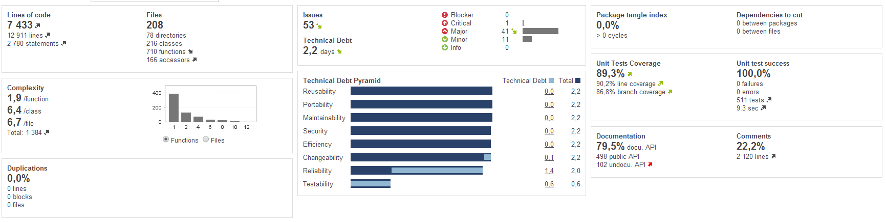
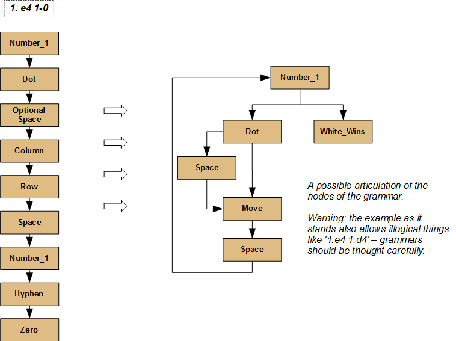
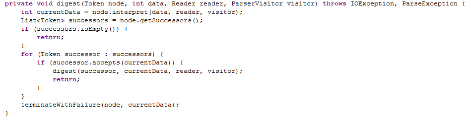
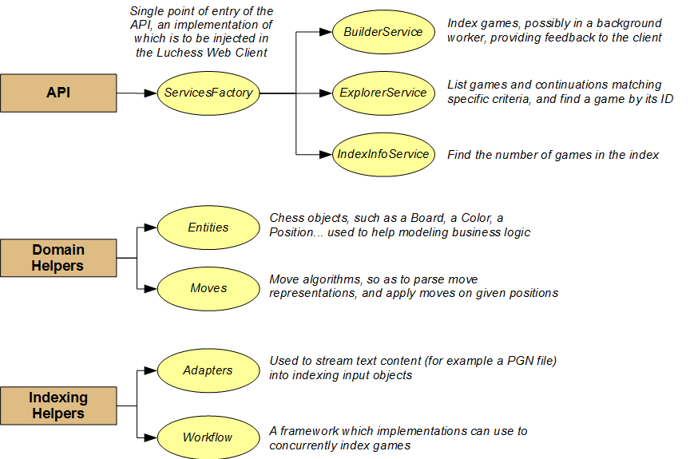
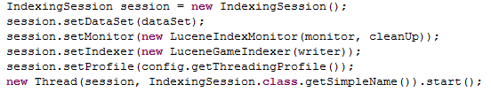
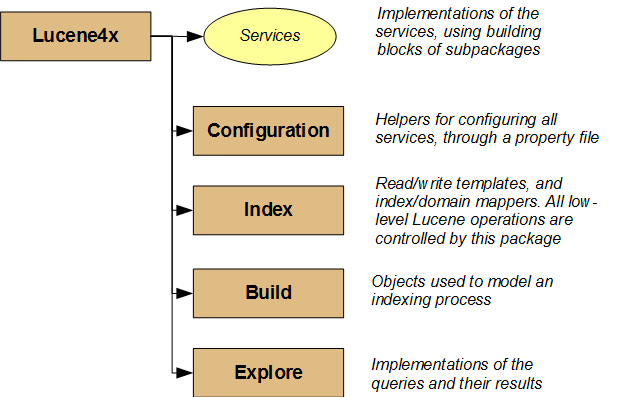
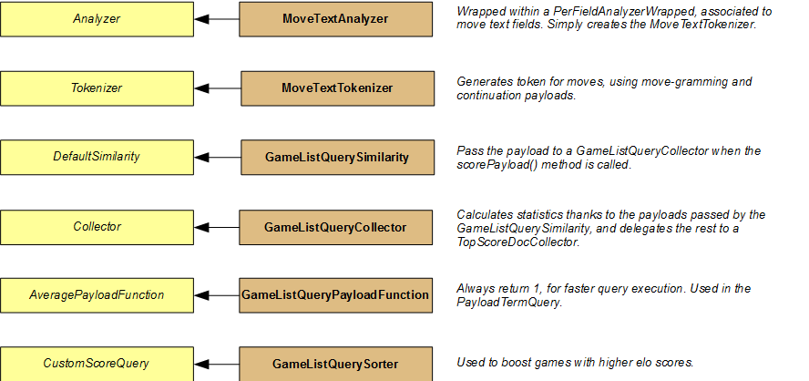
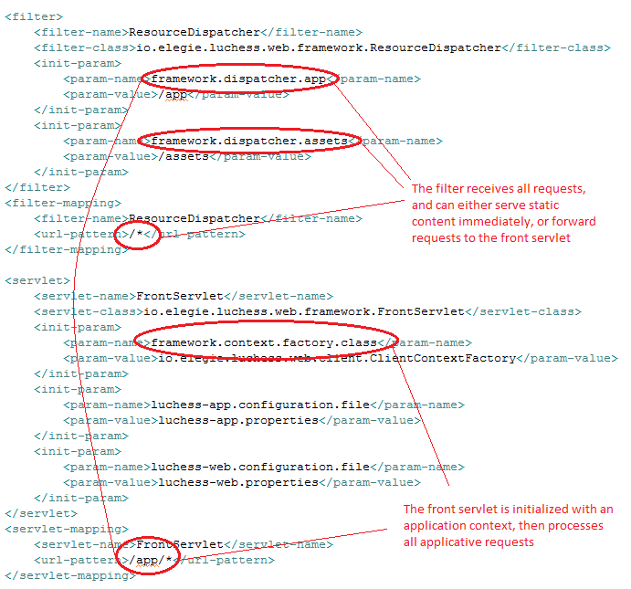
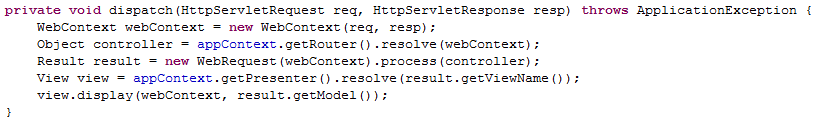

Developer Guide
About
This guide is intended for you developers, who have read the user guide and now wish to study the inner structure of Luchess, either to re-use some part(s) of it for your own projects, or simply to gain more insight on how the application works. You should however be made aware of the following two assumptions:
- The technologies, tools and libraries used in the project are fairly standard, and so are the architectural patterns. As such, I expect you to either be familiar with those, or resourceful enough to search the web when in lack of technical knowledge in certain areas.
- The guide will mostly document the intent behind designs, rather than the details of implementations (except when those are interesting or tricky). It aims at helping you find your way through the code, and not explain the code itself. As a matter of fact, you'll find out soon enough that the code is easy to grasp, as I worked extensively with Sonar, paying high attention to quality factors such as design, complexity and readability.
Enjoy your trip!
Technical environment
During the development of Luchess, I have used many tools, of different versions. What follows is a stable system of technologies, with the versions I last used - most pretty recent, but not necessarily the latest ones, for compatibility reasons. Also, I usually work on a Windows 8.1 64-bit platform.
Software factory
These are the technologies you need to manually install to ready your development environment. Some of them may be provided with installers, others only need unzipping and adding path variables.
| Techology | Version | Comments |
|---|---|---|
| Java SDK | 7 | You need a Java 7 SE Development Kit for Luchess. I've used multi-catch blocks, try-with-resources constructs and a bit of the Paths API. I've however stuck to previous reflection and concurrency APIs. |
| Eclipse | Juno SR-2, Build 20130225-0426 |
Make sure to properly reference your JDK 7 in Eclipse, using Windows/Preferences/Java/Installed JREs.
Also, I have several plugins installed, although I'm not sure whether the names / versions displayed
below are the correct ones (but at least, you get some idea):
|
| Gradle | 1.11 |
The build of Luchess is taken care of by Gradle. Available Gradle plugins and properties change regularly,
so be prudent when you decide to upgrade.
Note: if you use a Java version inferior to 8 (as per my recommendations), then add a GRADLE_OPTS environment variable to the path, with its value set to "-XX:MaxPermSize=512m". |
| Sonar | 4.2 |
Sonar provides quality measures, and is directly integrated to Gradle (although configurations have changed over time).
As of now, it does not work well with Java 8, so stick to Java 7. I run analyses using the "Sonar way with FindBugs" quality profile,
with Jacoco for code coverage. I have also installed the following Sonar plugins:
|
Development libraries
These libraries are used for development, mainly for testing. You do not have to install them, as they are referenced in the Gradle build script. However, make sure to import your project in Eclipse using the Gradle import option, so that all dependencies be properly resolved.
Note: I believe that you will need to build the Gradle main project once, before importing the projects, possibly because of #1766.
| Technology | Version | Comments |
|---|---|---|
| JUnit | 4.11 | All tests are written with JUnit. I'm used to running them in the IDE (using the coverage plugin), and each Gradle build runs all of them as well. It takes about 10s to run all 500+ tests on my machine. |
| Mockito | 1.9.5 | I use Mockito to test the web framework, to mock servlet-related objects. |
| FEST | 1.2.1 | I use FEST to test the Swing UI of the launcher. Be careful though: it is based on a robot, which moves the mouse to click on the buttons of the view. If you move the mouse during the tests, bring other windows up, or more generally if some other graphical software interferes by drawing something during the tests, then the tests will fail. Just @ignore them if this is a bother. |
| Jetty | 9.1.3.v20140225 | I use Jetty to start a web server and load the application in a few seconds, using the Jetty gradle plugin. I have also embedded a Jetty server in the launcher (see the launcher section below). In both cases, servers are configured to listen by default on port 9001. |
Note: so far, I have written UI tests only for the Swing launcher, and not for the web client. I may write some later, or not. If that were the case, then I'd need some additional tool (such as Selenium).
Runtime libraries
These libraries are bundled in the final archives. Again, you do not have anything to do with it, the Gradle script will take care of it.
| Technology | Version | Comments |
|---|---|---|
| Lucene | 4.7 |
Searching the chess games is made with Lucene, with the following libraries:
|
| Freemarker | 2.3.20 | I chose Freemarker as the main rendering technology for the web pages. Other technologies (such as JSP, Velocity...) could later be added relatively easily to the web framework. |
| JCharDet | 1.0 | This library is used to guess the charset of a file. I use it to import PGN files with the right charset, in order to avoid strange characters in the name of players. |
| Servlet | 2.5 | The servlet API is needed at compile time, but is not included in the final archive, as an implementation should already be provided by the web server. |
| SLF4J | 1.7.6 | All logs of the application are written with the SLF4J objects. By default, the Luchess application is bundled with the Logback implementation, but one could mark the implementation as provided by the runtime environment, or even substitute another implementation in the build script, without having to change the code (as intended by the SLF4J philosophy). |
| Logback | 1.1.1 |
This is the logging implementation used in the build script.
Note: the launcher does reference the library directly, as I wanted to write a custom appender. Most of the time though, you will deploy the web application directly on your web server, never using the launcher, intended for casual users with no web server on their computer. |
Useful commands
These are the commands I use in my daily development process (git commands not shown).
| Command | Usage |
|---|---|
|
cd "D:\Sonar\sonarqube-4.2\bin\windows-x86-64"
...then... StartSonar |
Navigate to the sonar scripts directory for your platform, then start the sonar server. I have kept the default settings (local database, port 9000). |
| cd "E:\Programmation\Luchess" |
Navigate to the project directory, which contains the build.gradle script.
Note: All gradle commands below must be executed from this location. |
| gradle luchess-web-client:jettyRun | Build the application, start a Jetty web server, and deploy the application on it. After this, you can navigate to Luchess in your favorite browser. |
| gradle luchess-web-client:jettyRunWar | Same as the precedent, except that it builds and deploys a war file (located in projects\luchess-web-client\build\libs). |
| gradle build | Build the application, i.e. all its sub-projects. Archives for each subproject are generated in projects\luchess-xxx\build\libs. |
| gradle test | Run all tests. Do not move your mouse or bring windows up when running the tests, or else the Swing robot used to test the launcher will fail. |
| gradle doc | Generate the javadoc for all subprojects. The javadoc is stored at doc\javadoc. |
| gradle sonarRunner | Starts a Sonar analysis. The sonar server must be started before you run this command. |
| gradle backup | Builds an archive of source and doc files, and store it in the /backup directory. If you use a version control system, such as Git, then you will not use this command. I simply wanted to keep elsewhere small archives of essential files. |
Current quality
So far, I lack real usage data for the application, so cannot tell from experience whether it is robust and efficient. It probably has bugs, too. However, I have tried my best to build a high quality program, using static analysis extensively. What follows is the current state of the application, as analyzed by Sonar and its related plugins.
The technical debt, which I currently find acceptable, is as follows:
| Item | Severity | Comments |
|---|---|---|
| Multithreaded correctness - Method calls Thread.sleep() with a lock held (1) | Critical | I deliberately use a sleep() method while holding a lock. This lock is held at most for a few seconds, and it has to do with the indexing process (which should occur very rarely). |
| Insufficient branch coverage by unit tests (16) | Major | Either because of uncovered branches or non-tested toString() methods. Uncovered branches have been manually tested and left as is, as they're usually related to exception management. |
| Public methods should throw at most one checked exception (13) | Major | One interface (Token) has a method that declares two possible exceptions: an IOException when some stream is unavailable, and a ParseException when there is a domain problem. As these are different in nature, I have chosen to keep them separate. |
| Generic wildcard types should not be used in return parameters (5) | Major | The Luchess MVC web framework lets any POJO be a controller, provided it has one method annotated with a @Controller annotation. The POJO does not need to implement any interface, which later gives this issue when working with reflection. This is a design that I like, so I have kept it. |
| Methods should not be too complex (3) | Major | Three methods which have complexity of 11, 13 and 14, superior to the 10 authorized threshold. In my opinion, they remain perfectly readable as they are, so I have not changed anything. |
| Exception handlers should provide some context and preserve the original exception (2) | Major | The caught exceptions are not lost, but rather delegated to another class, which the static analysis misses. |
| Bad practice - Method ignores exceptional return value (1) | Major | As a matter of fact, it does not, but this is hard to get because the return value is checked in an external hook for the method (lifecycle of an executor service). |
| Expressions should not be too complex (1) | Major | A big boolean expression, which I made readable and want to keep as is. |
| The members of an interface declaration or class should appear in a pre-defined order (8) | Minor | In some classes, I have separated logical content into sections, and relocated some member declarations here and there, as I believe it improves the readibility. This might indicate a violation of the Single Responsibility Principle, but I like the cohesion that results from this design, so I've eventually stuck to it. |
| Control flow statements "if", "for", "while", "switch" and "try" should not be nested too deeply (3) | Minor | As long as the flow remains readable, I'm fine with it. |
Software architecture
Overview
The following graph shows how Luchess projects articulate together:
- The luchess-pgn module is a custom-made PGN parser. It could be re-used by any chess software needing a PGN parser, provided its limitations are understood and accepted.
- The luchess-core module defines all services API (such as index and search), and provides domain objects and algorithms which can be freely used by implementations.
- The luchess-app-lucene4x module provides a Lucene 4.7 implementation for all services API.
- The luchess-web-framework module is a custom-made lightweight MVC web framework, which could be re-used by any Java web app needing a simple web framework.
- The luchess-web-client module is the web app itself. It uses the core services API, currently being injected the lucene4x implementation (but other conforming implementations, such as SQL-based ones, could be as easily injected). It works its flow logic around contexts and controllers respecting the contracts of the Luchess web framework.
- The luchess-launcher module is a standalone web app launcher built around Jetty. It can be used to launch any standard Java web app, and not only the Luchess web client.
Luchess-pgn
The Luchess-pgn module is Portable Game Notation (PGN) parser. As such, it aims at reading PGN files and making games objects out of them, for further processing. Basically, see that as creating a new Game(), and calling setter methods while reading raw text from a PGN file.
A PGN file contains one or many chess games, with their headers (players, locations, dates...), the moves played, and possibly comments, variations and appreciation marks. We call token any chess entity such as a move number, a move value, a player's name and so on. Here's a simple example:
[Event "F/S Return Match"]
[Site "Belgrade, Serbia Yugoslavia|JUG"]
[Date "1992.11.04"]
[Round "29"]
[White "Fischer, Robert J."]
[Black "Spassky, Boris V."]
[Result "1/2-1/2"]
1. e4 e5 2. Nf3 Nc6 3. Bb5 a6 {This opening is called the Ruy Lopez.}
4. Ba4 Nf6 5. O-O Be7 6. Re1 b5 7. Bb3 d6 8. c3 O-O 9. h3 Nb8 10. d4 Nbd7
11. c4 c6 12. cxb5 axb5 13. Nc3 Bb7 14. Bg5 b4 15. Nb1 h6 16. Bh4 c5 17. dxe5
Nxe4 18. Bxe7 Qxe7 19. exd6 Qf6 20. Nbd2 Nxd6 21. Nc4 Nxc4 22. Bxc4 Nb6
23. Ne5 Rae8 24. Bxf7+ Rxf7 25. Nxf7 Rxe1+ 26. Qxe1 Kxf7 27. Qe3 Qg5 28. Qxg5
hxg5 29. b3 Ke6 30. a3 Kd6 31. axb4 cxb4 32. Ra5 Nd5 33. f3 Bc8 34. Kf2 Bf5
35. Ra7 g6 36. Ra6+ Kc5 37. Ke1 Nf4 38. g3 Nxh3 39. Kd2 Kb5 40. Rd6 Kc5 41. Ra6
Nf2 42. g4 Bd3 43. Re6 1/2-1/2
The format itself is quite readable, but not easy to parse, because most tokens have many characters, and some even share the same starting characters. Consider the figure "1": it can be used to indicate the first move, the 10th move, a row position, a victory by White (1-0), a drawn game (1/2-1/2), and can even be used in header values or comments. When iterating the text and encountering a "1", what should we do? Store some state and move on, checking the state as we go, until we recognize a token? Look ahead and buffer the read characters, to use them in other tokens if needed? Or not store state, but backtrack when we encounter an ambiguous character? Also, how to manage the growing complexity, considering that the "1" figure is only one of many more PGN-allowed characters, and that we do not want to end up with ugly procedural spaghetti code?
The constraints I have chosen to respect are the following: no state-keeping, so as to allow concurrent execution, and no looking-ahead or backtracking, because these are inefficient. To do so, I have applied a combination of an Interpreter Pattern and a Visitor Pattern. If you do not know about them, check them out - they're very interesting!
Basically, we consider that there are a finite number of tokens, as defined in the PGN specification, and that these tokens can only be articulated together in certain ways - a set of rules we call grammar. For instance, a move number (like 24.) must be followed by a move (such as Qdxe4+), and not by anything else. In other words, in a given grammar, each token has list of possible successors, and the grammar can be represented as a tree, with a single root node (the token that starts a game), which unfolds with tokens describing the full game. What's also interesting in a grammar is that some of its nodes can be reused elsewhere, making for recursive branches - providing for high reusability of grammar parts, in exchange of increased complexity.
Now, how do we use a grammar? The idea is to have a parser (i.e. a client) load a grammar, and feed it a reader to the PGN source. A token in the grammar may accept a given reader, provided the current character of the reader matches the start of the entity representation of the token. If the token accepts the reader, then it may consumes as much as needed from it, until the full entity has been interpreted. If it does not accept it, then it leaves the reader untouched, and the parser moves on to the next token. The parsing is done either when a terminal token is reached, or when no successor accepts the incoming character (meaning a parse exception). The algorithm is actually pretty straightforward:
Note that the parser is provided with a visitor which contains the logic of what to do with the matched entities, for instance build a game object or a move object. Each time a token has finished interpreting an entity, it notifies the visitor of its success, passing the interpreted value of the entity. This lets us keep the parsing logic decoupled from the building logic, also resulting in the parser being usable in other applications than Luchess.
Luchess-core
The Luchess-core module defines the APIs of all Luchess services, which must be respected by all conforming implementations. It also provides various domain helpers, such as chess objects and algorithms, which implementations can rely upon when working out their logic. Here's a brief overview of the module.
Let us start with the API. It simply defines a skeleton of services, the implementation of which is to be provided by consumers of the core framework. The single entry point for services is the ServicesFactory, which gives access to all services. This means that the Luchess Web Client is actually decoupled from the Lucene-based implementation of the services: it is injected with an implementation of the factory, and simply relies on the API to navigate and use services. As such, one could perfectly write a SQL-based implementation of the services (a concurrent to our Lucene-based implementation!), and inject it in the client without having to change any part of the client code, simply by specifying the class name of the factory in a property file.
The indexing service definition permits concurrent implementations of indexing, and users of the framework are encouraged to check out and re-use the provided indexing framework if they want to walk that path. As for the exploring service, it leverages the Command Pattern, which makes the addition of new search queries a relatively easy task. Finally, the info service is a mere getter for the number of games in the index.
Note that the module provides an AbstractServicesIntegrationTest, which implementations can extend, to make sure that their services implementation respect all contracts of the API (this should not prevent them from writing their own tests, though!).
Now that we have presented the API, let us move on to domain helpers. The module provides a full set of objects related to chess, which lets up model algorithms elegantly. Chess players will find familiar concepts here: board, position, color, figurine, piece, and so on. Services may refer to such objects, as regular data transfer objects. In addition to these objects, domain algorithms regarding mvoes are also provided: these should help assert whether certain moves can be performed in given positions, which can be useful for clients which want to validate moves to be searched prior to the actual search.
The last part of the module is the indexing framework. This framework is built around an IndexingSession, an object that lets you run concurrent indexing process on your index (provided your underlying index supports concurrent writing). Running the session is as simple as creating the object, setting its properties, and running it in a new thread. Here's how the Lucene-based implementation of the builder service does it:
Luchess-app-lucene4x
The Luchess-app-lucene4x provides an implementation for the services defined in the Luchess-core module. This implementation is currently based on Lucene 4.7. The architecture of the module is as follows:
We work on the base of a one-to-one mapping between a chess game and a Lucene document, each property of the game being mapped to a field of the Lucene document. The types of fields and analyzers used differ from field to field.
| Property | Field Type | Analyzer | Comments |
|---|---|---|---|
| id | Stored TextField | KeywordAnalyzer | Each game has a unique generated ID, so that one can find a specific game easily (for example for download purposes). |
| Black | Stored TextField | SimpleAnalyzer | The name of the black player. This field may contain many names, which should be separated by a character recognized by the analyzer. |
| White | Stored TextField | SimpleAnalyzer | See above. |
| BlackElo | Stored IntField | - | The elo value for the black player. The field is not created if there's no positive integer available. |
| WhiteElo | Stored IntField | - | See above. |
| Result | Stored IntField | - | An int value representing the result of the game: 1 for a white victory, 0 for a drawn game, -1 for a black victory, -231 for an unfinished game. |
| MoveText | Stored TextField | MoveTextAnalyzer | A move text contains all moves for the game. A custom analyzer is used, so as to allow for efficient opening search. |
The purpose of the module is to index games, then create and execute Lucene queries, mostly creating query objects, combining them together within boolean queries, and feeding them to some index searcher. Let us however have a look at queries about game moves, which has required implementing many standard Lucene extension points.
At the beginning comes the raw text to be indexed. It contains a list of moves, expressed in the PGN format, separated by a space, such as e4 c5 Nf3 d6 d4. Our MoveTextAnalyzer generates tokens with the following two rules:
- Move-Gramming (forgive the neologism). We start by generating an empty token, named move zero. We then generate tokens accumulating all moves from the start, up to the current tokenized move index. Therefore, the first token after move zero contains only one move (e4), the second one contains two moves (e4 c5), the third one three moves (e4 c5 Nf3), and so on. Once we have generated a certain number of tokens (the analysis depth), we insert a last token, which contains all moves.
- Continuation as payload. Each generated token is associated with a payload containing the next move to come. The payload for move zero contains the first move of the game, and there's no payload for the last token (the whole move text), because there's no continuation.
The point of this model is as follows:
- We want to find games matching a certain opening sequences. We could have indexed the whole move text as a single token, and used a PrefixQuery on it (e.g. find all games starting by e4 c5), but such queries are slow on large volumes of documents. I have therefore chosen to generate "move-grammed" tokens, so as to use the very fast TermQuery on them, searching for an exact match. This only works up to the analysis depth, beyond which we still have to fall back on prefix queries - but the number of games to be searched at this point should have been greatly reduced, allowing for good performance nevertheless.
- For each search, we want to provide the user with possible continuations and associated statistics (who wins and so on). To do so, we have stored each continuation on each token, and perform aggregation calculations at search time, using a custom collector. In other words, if you search for e4 c5, you'll know that there's 611 games with a Nf3 continuation, 47% of which are won by white.
The following schema summarizes all the extensions I have made in order to perform move queries:
Provided you know a bit about Lucene objects and their lifecycles, there should not be any difficult content, as the library is used in a standard way.
Luchess-web-framework
Luchess comes with its own MVC-based web framework. It works in a standard fashion:
- A special filter, named ResourceDispatcher, is set up to receive all requests. It sends back static content directly, and forward applicative content to a single front controller, the FrontServlet.
- The front servet, at initialization, is configured with an ApplicationContext, from which it can grab a Router and a Presenter.
- For a given request, the servlet uses the router to find out which Controller is to be used to process the request.
- It then creates the controller and invoke it, automatically feeding request parameters to whatever data transfer object has been defined as the controller argument.
- The controller processes the request using its own domain logic, then returns a Result, containing a view name and a Model.
- The servlet uses its presenter to create a View object from the returned view name. It then asks the view to display itself, and we're done.
Example of a web.xml file:
The dispatching algorithm (can't get simpler, can it?):
Now, let's discuss details a bit more.
| Object | Comments |
|---|---|
| ApplicationContext | The framework must be initialized with an ApplicationContextFactory, from which it can create a singleton application context. The factory must be provided by the client, its fully qualified name properly specified in the web.xml configuration file. The main role of the context is to provide a router and a presenter (see below), but clients can also use it as some sort of global namespace for their own application objects. |
| WebContext | The WebContext is a simple wrapper for an http request and an http response. There's one rule the framework imposes on clients though: controllers shall never have access to JEE objects, such as requests, responses, sessions and so on. This has been made so in order to reduce dependencies and enforce good testability. |
| Router | The Router can resolve a WebContext to find which controller should be used. Additionally, routers may provide a list of all controllers known to them, and reverse a controller into a corresponding matching URL. Clients may provide their own routing implementation, or re-use the ones the framework so far offers: a PathBasedRouter, which derived the name of the controller from the path, concatenating path parts into a name, or a FQNBasedRouter, which expects the name of the controller to be provided as a parameter of the request. |
| Controller | Any POJO can act as a controller. It does not need to implement any interface or extend
any base class, but simply must have one public method annotated with a @Controller annotation.
This method must return a Result, containing the name of the view to be displayed and the model to be fed
to the view. It may have zero or one argument, and when provided, the argument must be a JavaBean-compliant object, the properties
of which will be injected with values taken from the request parameters.
Note: so far, all our controllers are stateless, meaning the framework does not give any access to the session. If needed, one could however extend the framework, by having existing session data injected into a second argument, and session data to be set, added as a new property of the Result object. |
| WebRequest | The WebRequest is a technical object in charge of executing a controller, i.e. finding the controller method, creating the argument object, injecting it with request data, and finally invoking the method. |
| Presenter | The Presenter can resolve a view name returned by a controller into a View object.
As for the router, clients may provide their own implementations, or re-use one of those offered by the framework:
a FreemarkerPresenter, which uses Freemarker to render its views, or
a FQNBasedPresenter, in which the view name indicates the fully-qualifed name of the view to be displayed.
The framework has been made so it could be easily extended with other view presenters, such as JSP or Velocity.
Note: the Freemarker presenter and related objects support internationalization through standard bundle files, and provides additional methods to be used in templates, such as translations and url rebasing. |
| View | The View can display itself, i.e. writing content to the response, using a template or not, injecting model data as they see fit. |
Luchess-web-client
The Luchess-web-client binds together other Luchess modules: it is a web application, based on the Luchess-web-framework, working with the services API and objects defined in Luchess-core, injected with a Luchess-app-lucene4x implementation.
The module defines its own ApplicationContext, customized with the PathBasedRouter and FreemarkerPresenter provided by the web framework. In addition to these standard functions, the context also loads, configures and keeps in memory a Luchess ServicesFactory, using a custom property file.
There's actually very little to tell about the module, because it's pretty straightforward, as the domain logic is delegated to the Luchess-core and Luchess-app-lucene4x modules, while the flow processing logic is handled by the Luchess-web-framework module. To give you an overview of all functions covered, here goes a quick presentation of all controllers used by the application:
| Controllers | Comments |
|---|---|
| BuildController | Used to launch a build process in the background. The progress of the indexing is tracked thanks to a standard index monitor, stored on the client context. |
| CountController | Used to grab and return the total number of games in the index. Note that the returned view is of type JSON, so this controller is meant to be called by an XmlHttpRequest call. |
| ErrorController | The application automatically calls this controller each time there's a server error. All captured server errors have been defined in the web.xml. |
| IndexController | Default page controller, which displays the index content, as well as the button to run an indexing process. |
| ListController | Grabs search parameters, perform a GameListQuery, and sends the result back. This controller shares the same view as the SearchController. |
| LoadController | Looks up a game by its ID, then returns the same view as the ListController, including the found game. The view, if a game is available, loads it in the search form, so that the user can navigate it, using the provided board. |
| MoveController | Used to determine which move the user has made on the board. Once the user moves a piece, the position and the start/end coordinates are transmitted to the controller, which uses domain helpers to determine and send back the PGN value for the move, to be included in the search form. |
| ProgressController | Called every second during an indexing process. It grabs the number of games currently indexed, as well as the elapsed indexing duration, so as to report them to the user. |
| SaveController | Used when a user wants to download a game. Given the proper ID, the controller retrieves the game and sends it back as an attachment - the FreemarkerView provided by the framework permitting such a configuration. |
| SearchController | Used to display the search form. It actually provides the base content for any search-based view. |
Luchess-web-launcher
The launcher is an independent piece of software, intended for users who do not have a web server installed. It basically embeds its own web server (Jetty), and provides a simple user interface to start/stop the server, loading the first .war file discovered in the current directory.
The graphical technology I used is Swing. I confess that I am not familiar with it, so the application architecture might not be optimal! I have applied usual object-oriented design principles such as low coupling and responsibility encapsulation, ending with:
- A services package, separating services definitions from their implementations. The ServerService lets you start and stop a server, while the WebAppService provides you with a web app object, holding all data necessary to find and load the application. I have provided a single implementation for each of these services, a JettyServerService embedding a Jetty server, and a AnyWarWebAppService implementation which returns the first .war file found in the same directory of the launcher.
- A ui package, containing the definition of the screen, referencing the services interfaces (the implementations of which being injected at screen creation). The package is separated in two parts: common utilities and screens. Each screen (there's only one here: the console) is further separated in two parts: the components it contains, and the main screen, articulating all components. All components do not inherit Swing objects but rather compose them, as I believe preserving the inheritance trail is important (for instance you could want a parent component object to manage cross-cutting concerns, such as logging or security).
The launcher, beyond the functions of simply starting / stopping the server, also provides a view of all log calls. I had to define a hard dependency on Logback for this, as I needed to register my own appender to capture appropriate log calls. As such, I am not sure that applications using a logging mechanism not compatible with SLF4J will have their log calls correctly reported (I have not tested it).
Also, working with Swing was the opportunity for me to discover FEST, a robot-based test framework that let me validate the console screen. It was pretty fun to see all the animations on screen, although that can be a problem is another software interacts with the windowing system at the same time. Incidentally, I was happy to find out that low coupling of services interfaces worked great here, as I could simply inject services mocks to have the screen validated.
That's all! Thanks for reading. I hope that you have fun reading and re-using the source code.